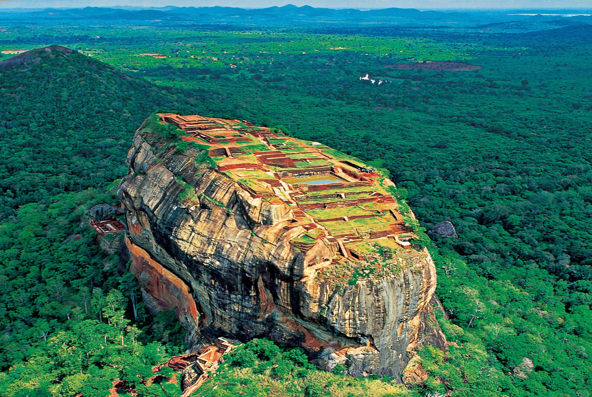
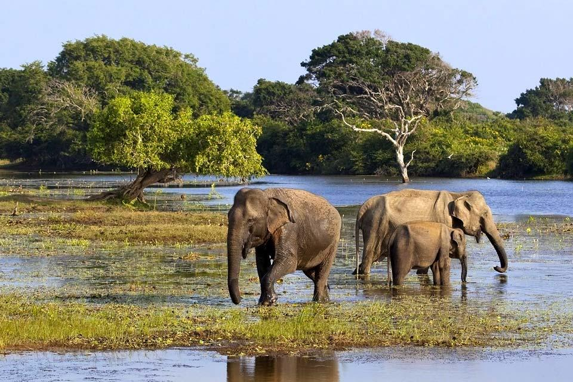
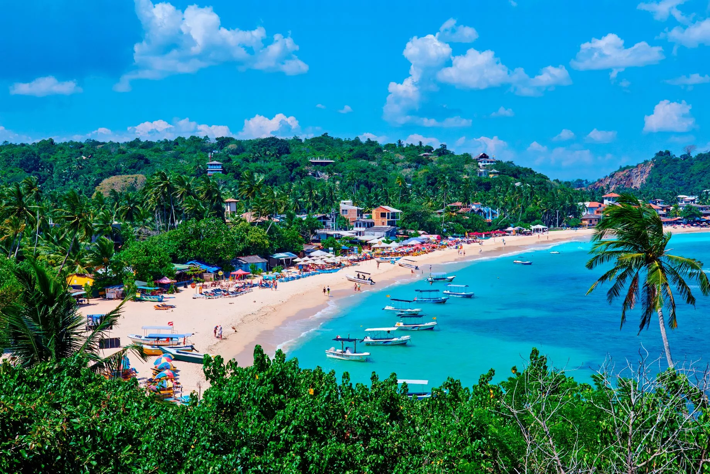
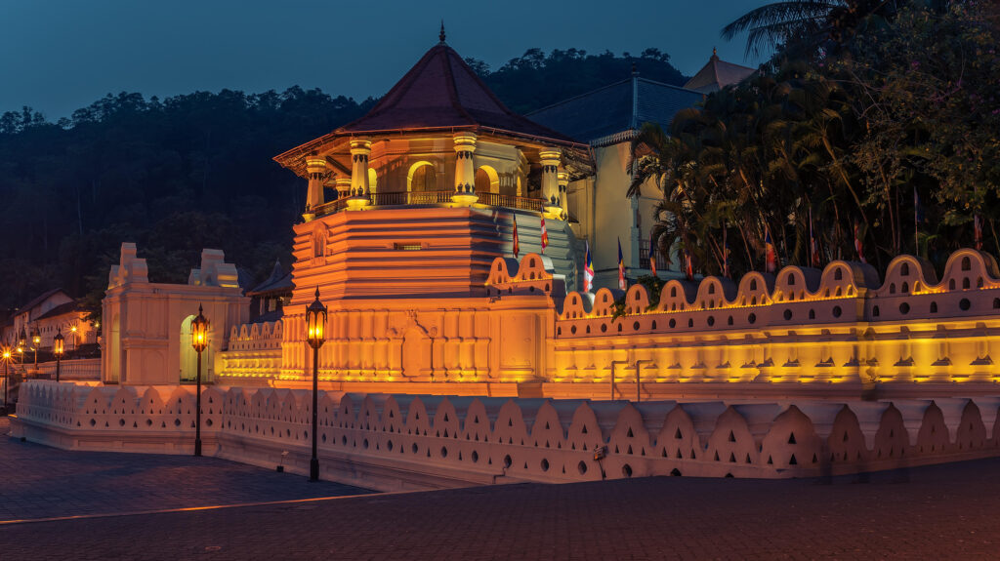

The Nine Arch Bridge (Sinhala: ආරුක්කු නමයේ පාලම; Tamil: ஒன்பது வளைவுகள் பாலம்) also called the Bridge
in the Sky,
is a viaduct bridge in Sri Lanka and one of the best examples of colonial-era railway construction in
the country.
The bridge was designed to accommodate a challenging nine-degree curve and steep gradient. Built
entirely by local labor under British supervision,
the construction faced significant logistical challenges, including difficult terrain and material
transport.
Completed in 1919, the bridge has since stood resilient, showcasing innovative engineering solutions
such as concrete cornice blocks for arch support
and locally produced sand-cement blocks for facing.
It is located in Demodara, between Ella and Demodara railway stations.
The surrounding area has seen a steady increase of tourism due to the bridge's architectural
ingenuity
and the profuse greenery in the nearby hillsides.
Click here to read more about 9 arches.

2.Sigiriya
Sigiriya or Sinhagiri (Lion Rock Sinhala: සීගිරිය, Tamil: சிகிரியா/சிங்ககிரி,) is an ancient rock
fortress located in the northern Matale District near the town of Dambulla in the Central Province,
Sri Lanka. It is a site of historical and archaeological significance that is dominated by a massive
column of granite approximately 180 m (590 ft) high.
According to the ancient Sri Lankan chronicle the Cūḷavaṃsa, this area was a large forest,
then after storms and landslides it became a hill and was selected by King Kashyapa (AD 477–495) for his
new capital.
He built his palace on top of this rock and decorated its sides with colourful frescoes.
On a small plateau about halfway up the side of this rock he built a gateway in the form of an enormous
lion.
The name of this place is derived from this structure; Siṃhagiri, the Lion Rock.
The capital and the royal palace were abandoned after the king's death. It was used as a Buddhist
monastery until the 14th century.
Sigiriya today is a UNESCO listed World Heritage Site. It is one of the best preserved examples of
ancient urban planning.
Click here to read more about Sigiriya.

3.Yala National Park
Yala (යාල) National Park is the most visited and second largest national park in Sri Lanka, bordering
the Indian Ocean. The park consists of five blocks, three of which are now open to the public. There are
also two adjoining parks, Kumana National Park or 'Yala East' and Lunugamvehera National Park. The
blocks have individual names, such as Palatupana (Block 1). It is situated in the southeastern region of
the country, in the Southern Province and Uva Province. The park covers 979 square kilometres (378 sq
mi) and is located about 300 kilometres (190 mi) from Colombo. Yala was designated as a wildlife
sanctuary in 1900, along with Wilpattu, designated in 1938, as the first two designated national parks
in Sri Lanka. The park is best known for its variety of wildlife and is important conservation of Sri
Lankan elephants, Sri Lankan leopards and aquatic birds.
The area around Yala has hosted several ancient civilizations. Two important Buddhist pilgrim sites,
Sithulpahuwa and Magul Vihara, are situated within the park. The 2004 Indian Ocean tsunami caused severe
damage on the Yala National Park and 250 people died in its vicinity. The number of visitors has been on
the rise since 2009, after the security situation in the park improved.
Click here to read more about Yala National
Park.

4.Hikkaduwa Beach
Hikkaduwa is a coastal town in south-west of Sri Lanka. It's a world famous beach holiday destination,
well known for its scenic beaches , coral reef sanctuary, surfing and nightlife.
Hikkaduwa might be the most popular surf spot on the Sri Lankan south-west coast located in the Galle District, Hikkaduwa is divided into three main areas (from north to south) : the
Sri Lankan town, then the very lively tourist area, then the upmarket area.
The Hikkaduwa National Park was the first marine sanctuary to be established in Sri Lanka. It has
approximately seventy varieties of multi-coloured corals.In 2023, the Wildlife Conservation Department
started to restore the coral reef. Live coral washed ashore with the waves are planted on coconut
shell-shaped cement blocks dropped and nursed in the medium-deep seabed of Hikkaduwa.
Click here to read more about Hikkaduwa Beach.

5.Temple of the Tooth
Sri Dalada Maligawa, commonly known in English as the Temple of the Sacred Tooth Relic, is a Buddhist
temple in Kandy, Sri Lanka. It is located in the Royal Palace Complex of the former Kingdom of Kandy,
which houses the relic of the tooth of the Buddha. Since ancient times, the relic has played an
important role in local politics because it is believed that whoever holds the relic holds the
governance of the country. The relic was historically held by Sinhalese kings. The temple of the tooth
is a World Heritage Site mainly due to the temple and the relic.
Bhikkhus of the two particular chapters, the Malwathu chapters and Asgiri chapters, conduct daily
worship in the inner chamber of the temple. Rituals are performed three times daily: at dawn, at noon
and in the evenings. On Wednesdays, there is a symbolic bathing of the relic with a herbal preparation
made from scented water and fragrant flowers called Nanumura Mangallaya; this holy water is believed to
contain healing powers and is distributed to those present.
Click here to read more about Temple of the Tooth.
What country visits Sri Lanka most
Country
No of Tourists
UK
85187
Russia
151784
Germany
69780
Enter your e-mail to subscribe with our newsletts: